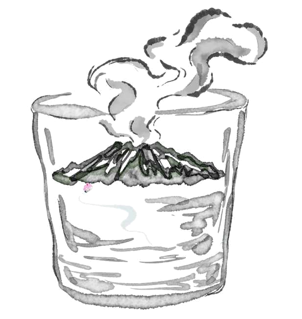
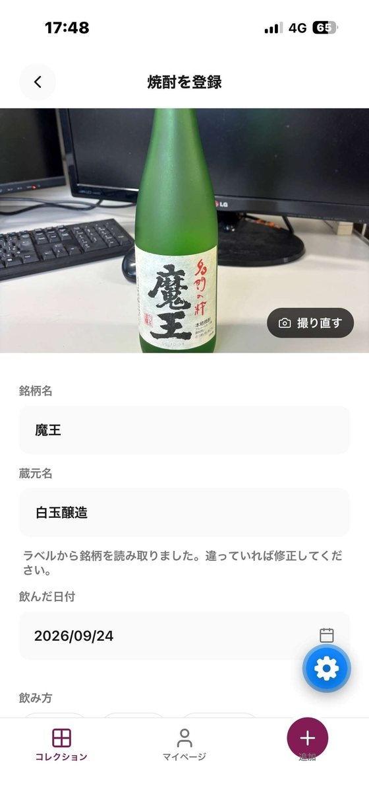
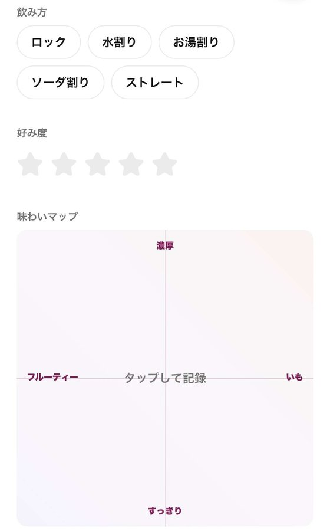
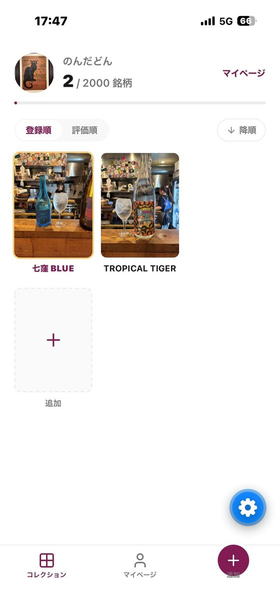
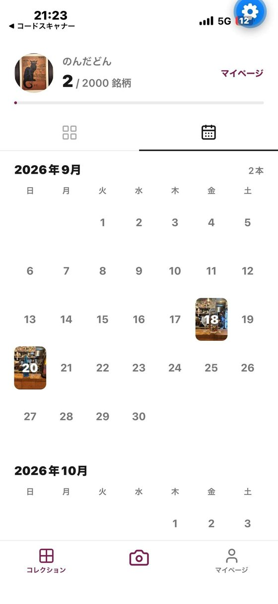
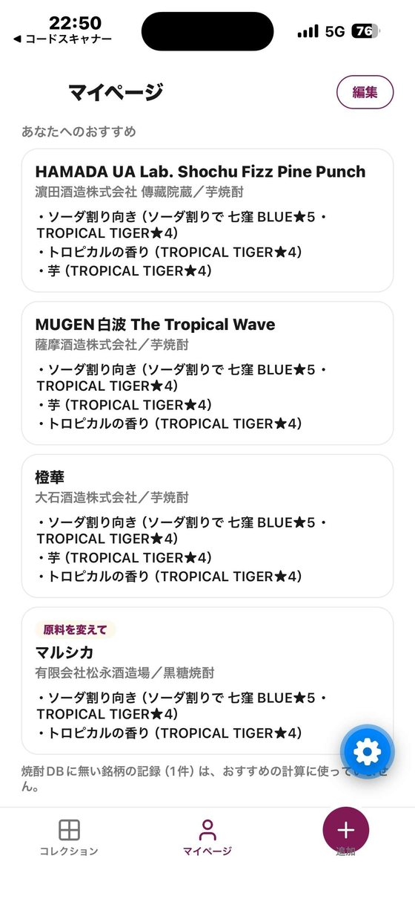

ISHIN 2026 鹿児島版AKATSUKIプロジェクト
のんだどん
鹿児島発の焼酎コレクションアプリです。
飲んだ一杯を写真に撮ると、銘柄と蔵元の名前と一緒に、自分だけの棚に並んでいきます。
鹿児島大学大学院 理工学研究科 情報科学専攻の学生6名で開発しています。

焼酎の出会いを、もっと楽しく。
名刺をお受け取りいただいた方へ
私たちは、経済産業省の地方人材育成プロジェクト「ISHIN 2026」の一員として、鹿児島の焼酎文化を、ITでもっと楽しくすることをテーマに活動しています。
名刺だけではお伝えしきれない、私たちが何をつくっていて、なぜ蔵元や飲食店のみなさまのお力をお借りしたいのかを、このページにまとめました。
楽しかった夜の一杯、
翌日には名前を忘れていませんか。
居酒屋では、新作や限定の焼酎を目当てに通い、ボトルと一緒に写真を撮るお客様をよく見かけます。焼酎を「集めて、残したい」という気持ちは、すでにあります。ただ、今の写真フォルダでは、その出会いがその場限りになりがちです。
- 銘柄を思い出せない
- 会話が中心の飲み会では、あとから銘柄名を正確に思い出せません。
- 写真が埋もれる
- 撮った写真が銘柄名や蔵元名と結びつかず、探しても見つかりません。
- 自分の好みがわからない
- 飲んだ数や飲み方、どれが好きだったかを整理する手段がありません。
- 背景を知る入口がない
- 原料や製法、土地のことなど、銘柄や蔵元の魅力に触れるきっかけが少ないままです。
のんだどんで、できること
飲む、撮る、残す。いつもの飲み方のまま、焼酎との出会いを記録できるようにしています。
-

1 その場で撮る ボトルやグラスを撮影。ラベルから銘柄の候補を読み取るので、入力の手間がほとんどかかりません。 -

2 味わいを残す ロックやお湯割りなどの飲み方、好み度、味わいマップでの印象を記録します。 -

3 棚にたまる 飲んだ焼酎が自分のコレクションに並び、全2,000銘柄のうち何銘柄を飲んだかがひと目でわかります。 -

4 思い出と振り返る いつ、誰と、どんな一本を飲んだかを、カレンダーで見返せます。
味わいマップ
「すっきり／濃厚」「フルーティー／いも」の2つの軸で、飲んだ印象をタップひとつで記録します。5段階評価や香りの分類表も試したうえで、誰でも迷わず使えるこの形を選びました。記録した位置は、好みに合う焼酎を探す手がかりにもなります。
あなたへのおすすめ開発中
これまでの記録から、好みに近い焼酎を提案する機能を開発しています。割り方や味わいに加えて、原料・麹・蒸留方法との関係を、蔵元や飲食店の方にうかがいながら設計しています。

蔵元・飲食店のみなさまへ
のんだどんが目指すのは、焼酎を飲む体験を広げ、つくる人と飲む人の新しいつながりをつくることです。アプリはまだ試作の段階で、だからこそ、焼酎を誰よりもよく知るみなさまのお話を、設計に反映させたいと考えています。
私たちが目指していること
- 銘柄と蔵元の名前が、お客様の手元に残る。「あの店で飲んだ、あの一本」を、次は名前で選んでもらえるようにします。
- 飲み方や味わいの感想が集まる。どんな飲み方で、どう感じたかという飲み手の声を、つくり手に届ける仕組みを検討しています。
- お店で飲んだ記録が、また来るきっかけになる。カレンダーを見返したとき、お店での一杯も思い出として残ります。
お力をお借りしたいこと
お話を聞かせてください
お客様に焼酎をすすめるとき、何を手がかりに選んでいるか。好みや割り方、味わいと製法の関係など、現場の考え方を教えてください。
銘柄の情報をご提供ください
原料・麹・蒸留方法・おすすめの飲み方など、アプリに正しい情報を載せるために、蔵元のみなさまの情報をお借りしたいと考えています。
試作版を使ってみてください
お店やご自身の晩酌で、実際に記録してみてください。使いにくい点や、お客様の反応をうかがえると大変助かります。
率直なご意見をください
「こういう機能があれば店で紹介しやすい」「この表現は誤解を生む」など、どんな小さなことでも構いません。
ご負担にならない形で進めます。まずはお気軽にご連絡ください。
ISHIN 2026での活動
ISHIN 2026は、経済産業省が主導する、地方の若手IT・起業家人材の発掘と育成を目的としたプロジェクトです（鹿児島版AKATSUKIプロジェクト）。単なるビジネスコンテストではなく、地域の産業・文化・地理的な特性を活かし、地元の企業・自治体・研究機関と連携しながら、その地域でしか生まれない取り組みを目指します。
私たちはその中で、鹿児島の焼酎文化をより楽しくし、ITの側面から盛り上げることをテーマに、自分たちで課題を定め、アプリの開発に取り組んでいます。
- 2026年8月プロジェクト開始。焼酎をテーマに、飲み手の行動や困りごとを調査
- 2026年9月試作版アプリで、撮影・記録・コレクション・カレンダーが動くように
- 2026年10月〜蔵元・飲食店の方へのヒアリング、味わいマップとおすすめ機能の改善現在
- 2027年1月プロジェクト期間の終了
お知らせ
- お知らせを読み込んでいます。
メンバー
鹿児島大学大学院 理工学研究科 情報科学専攻
- 江藤 遥香
- 山下 旺亮
- 石丸 隆稀
- 尾曲 軍将
- 川越 悠世
- 山田 智輝
お問い合わせ
ヒアリングへのご協力、試作版の利用、取材など、のんだどんに関するご連絡はメールでお受けしています。お名前（店名・蔵元名）とご用件をお書き添えください。
メールで問い合わせるnondadon@example.com